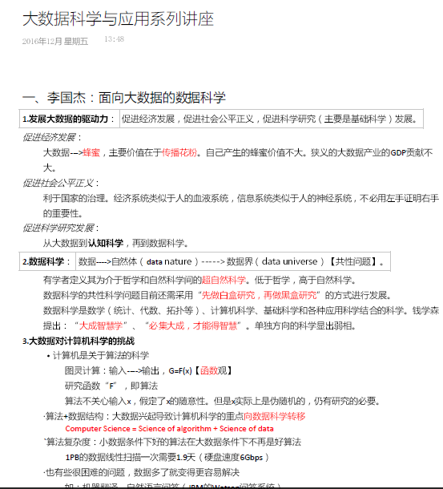

Introduction
本文为《大数据科学与应用系列讲座》笔记的介绍。（PDF）
图片版（Onenote）

更多图片版已移除。请参照上文的OneNote在线浏览。
失真版（Markdown）
失真版供快速预览、搜索索引，格式较差。
一、李国杰：面向大数据的数据科学
| 1.发展大数据的驱动力： | 促进经济发展，促进社会公平正义，促进科学研究（主要是基础科学）发展。 |
|---|---|
促进经济发展：
大数据—->蜂蜜，主要价值在于传播花粉。自己产生的蜂蜜价值不大。狭义的大数据产业的GDP贡献不大。
促进社会公平正义：
利于国家的治理。经济系统类似于人的血液系统，信息系统类似于人的神经系统，不必用左手证明右手的重要性。
促进科学研究发展：
从大数据到认知科学，再到数据科学。
| 2.数据科学： | 数据——>自然体（data nature）——->数据界（data universe）【共性问题】。 |
|---|---|
有学者定义其为介于哲学和自然科学间的超自然科学。低于哲学，高于自然科学。
数据科学的共性科学问题目前还需采用“先做白盒研究，再做黑盒研究”的方式进行发展。
数据科学是数学（统计、代数、拓扑等）、计算机科学、基础科学和各种应用科学结合的科学。钱学森提出：“大成智慧学”、“必集大成，才能得智慧”。单独方向的科学显出弱相。
3.大数据对计算机科学的挑战
·计算机是关于算法的科学
图灵计算：输入——>输出，G=F(x)【函数观】
研究函数“F”，即算法
算法不关心输入x，假定了x的随意性。但是x实际上是伪随机的，仍有研究的必要。
·算法+数据结构：大数据兴起导致计算机科学的重点向数据科学转移
Computer Science = Science of algorithm + Science of data
`算法复杂度：小数据条件下好的算法在大数据条件下不再是好算法
1PB的数据线性扫描一次需要1.9天（硬盘速度6Gbps）
·也有些很困难的问题，数据多了就变得更容易解决
如：机器翻译，自然语言问答（IBM的Watson问答系统）
4.大数据对传统计算机视觉（CV）和机器学习（ML）的冲击
计算机视觉、机器学习是人工智能最活跃的研究领域，但多年来学习的样本和测试的样本度不够大。Princeton大学的李凯教授采用在线外包的办法，一年之内完成了2.1万种分类、包含约2000万幅图像（每类700-1000幅）的ontology图像库（ImageNet），（基于wordnet分类，目前只有名词）。采用ImageNet测试现有的各种图像识别分类算法，绝大多数算法都失灵，说明在小的ontology下开发的图像识别算法没有实际意义。但Deeplearning算法的正确识别率明显高于其他算法，所以深度学习成为目前机器学习的主要研究方向。
5.大数据对传统统计学的挑战
·大数据往往是非独立同分布（悉尼科技大学 操云龙）
——统计学的基本假设是变量服从独立同分布（IID假设）
·超高维问题引起经典统计推断失效（徐宗本院士）
——经典统计：n>>p．高维：p>>n,大数据高维度p=o(exp(n))
——热点研究：稀疏建模（尽管变量很多，但很多都是0）
——大数据处理和智能处理的核心都是降维，从n维降到1维（如：排序目的）。样本数量将随着维数的增加而指数增加就出现维数灾难。
·分析与事物相关的所有数据，而不是分析少量的样本数据
——2009年谷歌利用相关词全部搜索统计（5000万+）准确预报了H1N1流感爆发，比医报部门提前2、3个礼拜
——2013年由于政府发通告、谷歌加推荐等原因，使得谷歌的流感预测失灵，明显高估
——大数据与小数据结合（All data，全数据），原始数据的可信度？
| 6.网络科学与数据科学： | 复杂网络分析应为数据科学的基石。 |
|---|---|
大数据往往以复杂关联的数据网络形式存在，因此要理解大数据就要对大数据后面的网络进行深入分析。大数据面临的本质科学问题可能就是网络科学问题。到了21世纪，网络理论正在成为量子力学的可尊敬的后继，正在构建一个新的理论和算法的框架。
中科院计算所的大数据团队主要从事网络大数据的研究，研究方向包括分布式海量数据处理的核心引擎、计算模型和国家级测试床，网络舆情系统、社会化搜索引擎、数据密集型网络服务等，李国杰院士学生的研究方向包括社会网络的影响力研究、推荐系统等。
7.需要发现新的门捷列夫周期表
·门捷列夫周期表为化学成为一门基础学科奠定了基础。现在生物领域有基因组学，材料、化学、制药、生理、病理、干细胞领域都在研究“基因组”，也有人在讨论人类语言的“基因组”，这些基因组都是构成整体的基本元素。
·发现这些“基因组”都需要采用计算机对海量的数据进行分析，导致各个领域都出现XX信息学。
·从上个世纪70年代开始，围绕计算复杂性形成了以算法研究为中心的计算机科学。随着计算机科学与其他学科的交叉相融，计算机科学的研究重点将逐步转移到以研究各种基因组学为重点的数据科学。现在到了发现新的门捷列夫周期表的时候了。
8.计算理论的新研究方向
·传统计算复杂性是研究当问题规模变大时，计算量如何变化，以小问题预测大问题。而大数据问题一开始就给你全部数据，需要反过来思考如何找到缩小规模的数据，而问题的基本属性没有大的变化。
·如果是传统的计算复杂性是度量外向组合爆炸（scale up）的复杂程度。那么大数据问题的计算理论应该是度量内向“压缩”的困难程度。
·如果当数据规模扩大，反应数据间相互关系的网络结构保持很好的相似性，则是一个容易解决的大数据问题；反之，如果网络结构变得面目全非，则是一个难以解决的大数据问题。
*需要研究“数据量复杂性”（问题需要多大的数据量）
建立一种新的计算理论，对求解一个问题达到某种满意程度需要多大规模的数据量，能够给出理论上的判断（多项式级、NP问题、数据规模阈值）。
| 9.培养“π型人才”： | 所有科学都在迅速变为“数据科学”。 |
|---|---|
有经验的计算机科技人才可以大规模提高数据处理速度，在各领域应该培养熟悉数据分析的科研人才。
计算机系需要面对全校调整和新增有关采集、整理、分析的新课程。
————————————————————————————————————————————
二、吴军讲座：数据为王和机器智能的时代
1.什么是机器智能
世界新技术的三个趋势：
·云计算 + 移动互联网 + 大数据（正在进行时）
·机器智能（现在时）
（预览结束）